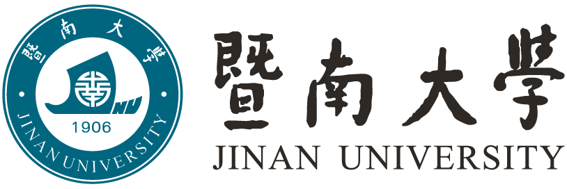

M.Sc. in Industrial Engineering and Logistic Management (supervised by Dr. Tak Nam, Wong): Colour Petri Net – based Modelling for Integrated Process Planning and Scheduling. My master thesis obtained the highest grade among the department

My supervisors are Dr. William Marsh, Prof. Norman Fenton, and Prof. Martin Neil.
My current research topic is using Bayesian network models to improve maintenance decision making from sparse data and expert judgement.
Queen Mary University of LondonSep 2015 – Present
Ph.D. student in Computer Science (supervised by Dr. William Marsh, Prof. Norman Fenton and Prof. Martin Neil): Using Bayesian Networks and Complex Data to Optimize Infrastructure Maintenance in Railways
The University of Hong Kong
Sep 2013 - Dec 2014
M.Sc. in Industrial Engineering and Logistic Management (supervised by Dr. Tak Nam, Wong): Colour Petri Net – based Modelling for Integrated Process Planning and Scheduling. My master thesis obtained the highest grade among the department
Jinan University
Sep 2009 - Jun 2013
B.Sc. in Electronic Commerce (supervised by Dr. Hua, Bai): Tourism Supply Chain Collaborative Demand Forecasting Model based on Colour Petri Net. Awarded for the best undergraduate thesis of Jinan University

Ph.D Research Committee RepresentativeJune 2016 - Present
I am the Ph.D. research committee representative for Risk and Information Management Group (RIM), EECS, QMUL
Liguo Steel Group (HK) LimitedJun 2014 - Apr 2015
I was a manager trainee, worked on commodity shipping, trading and financing
Email: haoyuan.zhang@qmul.ac.uk
Office: CS437, Computer Science Building, Queen Mary University of London, Mile End Road, London E1 4NS